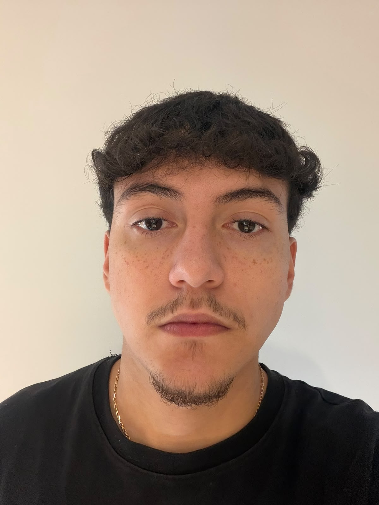
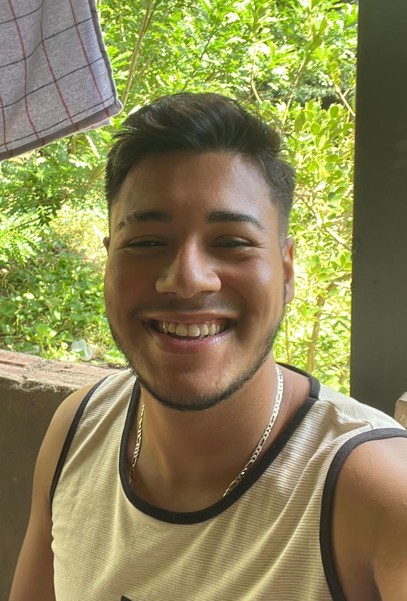
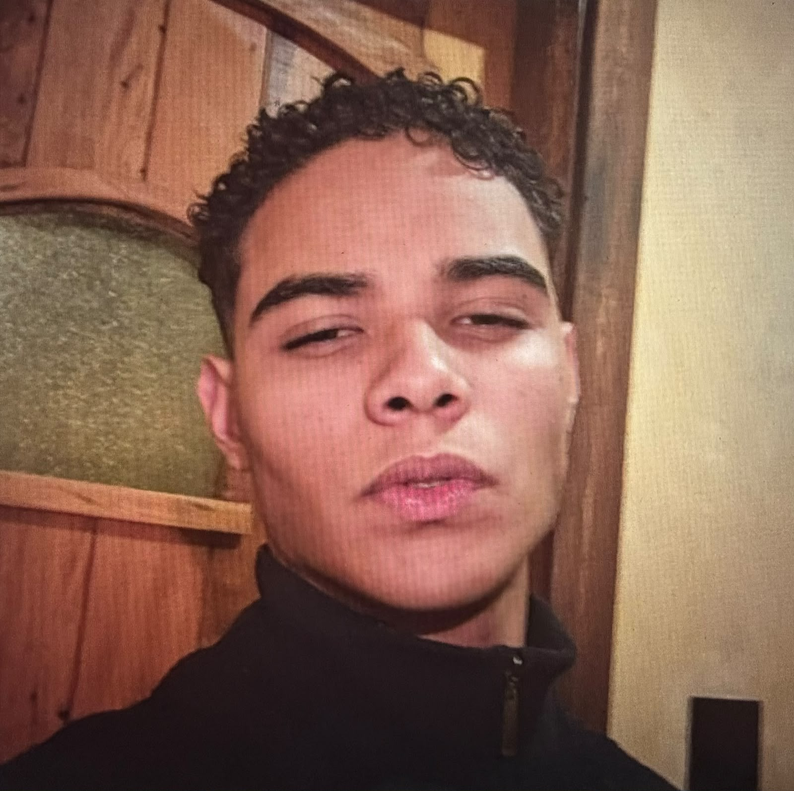

Eduardo Regenold da Costa Lima
RM | 574720
Turma | 1TDSPB
Conheça as pessoas que desenvolveram o Conecta Campus.

RM | 574720
Turma | 1TDSPB

RM | 574837
Turma | 1TDSPB

RM | 576881
Turma | 1TDSPB
RM | 576834
Turma | 1TDSPB